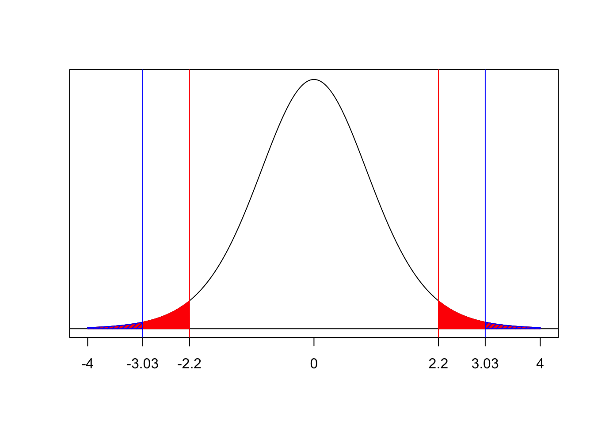
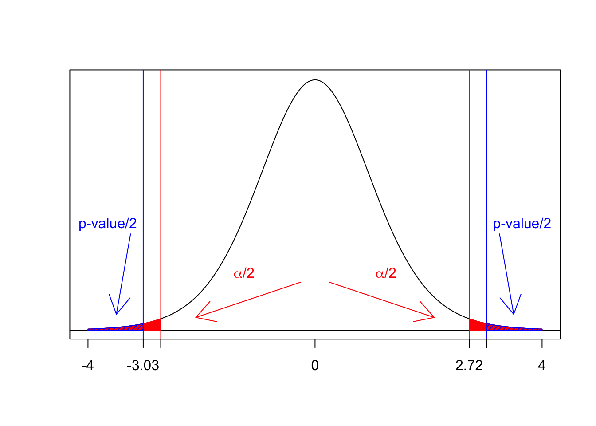
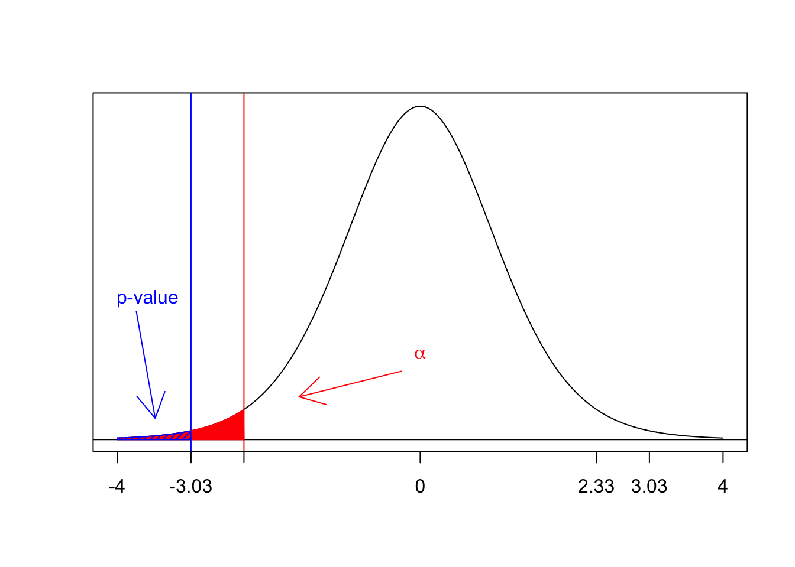
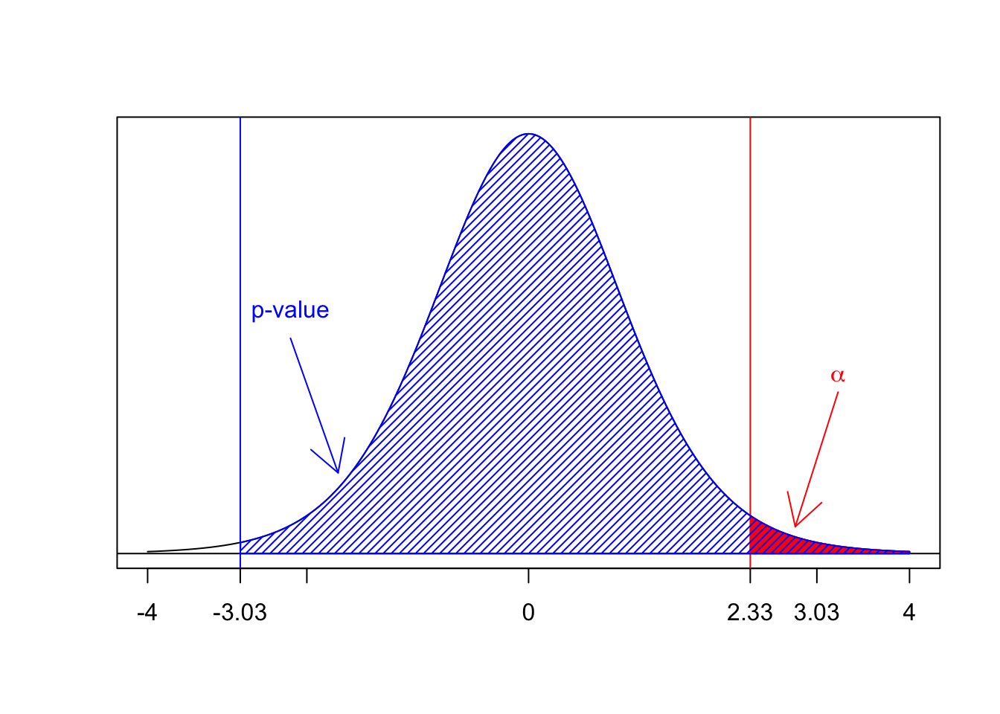
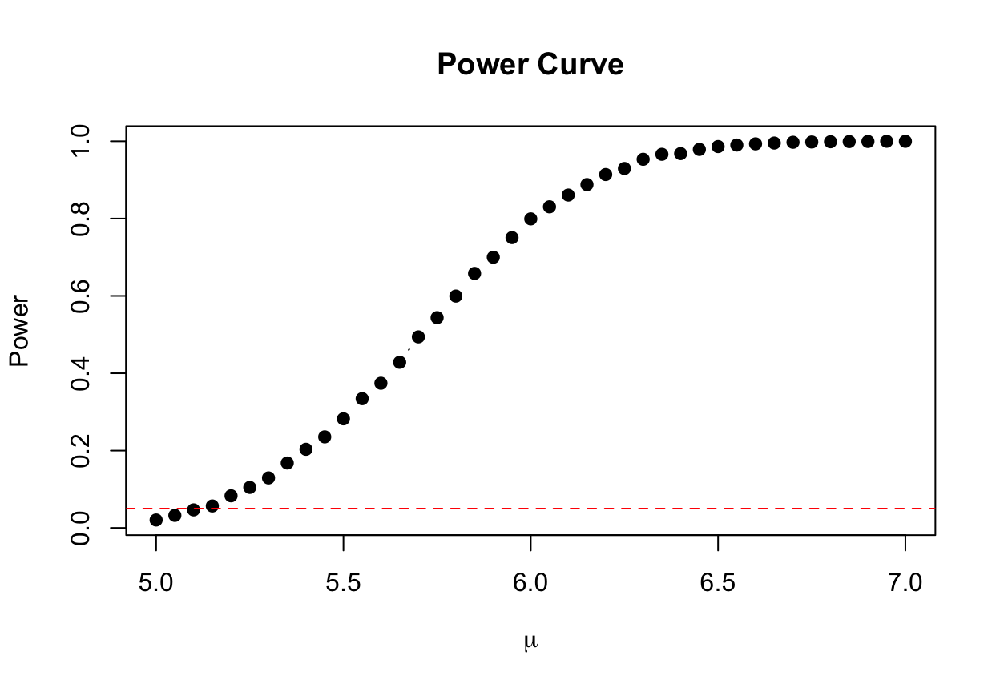
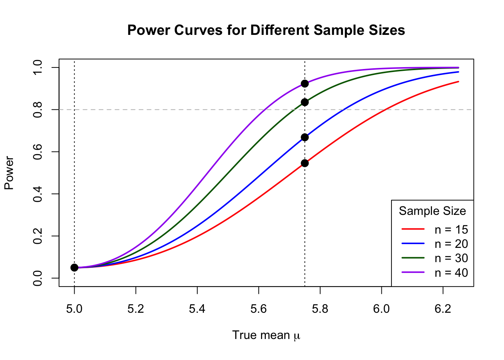
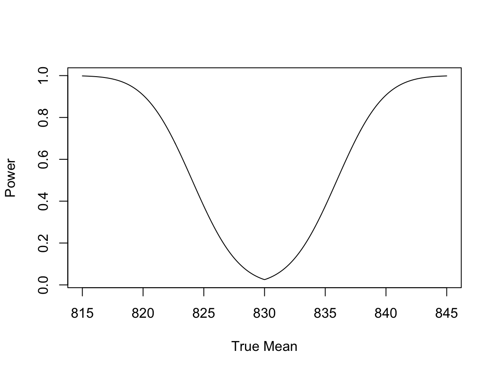
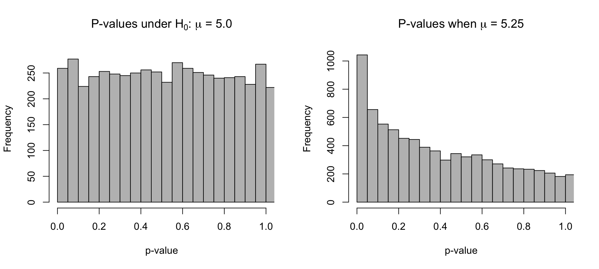

Chapter 10 Hypothesis Testing
Statistical inference allows us to use data to learn about the world in a rigorous way. In the previous chapter, we explored confidence intervals as one approach to inference, where we use a sample to construct an interval that will contain a population parameter with a stated 'confidence'. In this chapter, we turn to a second major inferential tool: hypothesis testing. This approach is commonly used when a researcher has a specific claim or question <--about a population characteristic and wishes to assess whether the available data provide strong evidence for or against that claim.
The idea is superficially simple (though you'll find that the topic is deep enough that it will take a while to grasp all the concepts). Suppose there is a claim you are interested exploring. This claim is either true or false, but you do not know which at this point. A sensible approach would be to gather evidence and make an informed decision.
Throughout this chapter, we will develop the hypothesis testing framework for the population mean (\(\mu\)), matched pairs (\(\mu_D\)), proportion (\(p\)), and variance (\(\sigma^2\)).
10.1 Logic and Language of Hypothesis Testing
When conducting a hypothesis test, we begin by formulating two competing hypotheses:
- The null hypothesis (\(H_0\)): our reference value which describes our current understanding about the parameter
- The alternative hypothesis (\(H_A\)): an interesting new direction which would cause us to update our understanding about the parameter
The approach we take is to assume that the null hypothesis is true, and then ask:
How unusual is what we observed if \(H_0\) were true?
If what we observed is highly unlikely then either...
- We observed something very unusual; this can happen but it doesn't happen very often (by definition)
- Our current understanding is flawed and should be revisited, causing us to reject \(H_0\) in favor of \(H_A\).
This framework is analogous to a legal court setting, where a person is presumed innocent unless the evidence against them is sufficiently compelling. Likewise, in hypothesis testing, we begin by assuming \(H_0\) is true and only reject it if there is enough evidence in favor of \(H_A\).
Again, like the U.S. legal system, there are two components: the evidence and the legal standard of what constitutes enough evidence:
The evidence:
A test statistic, \(T\), which quantifies how 'unusual' what we observed is from what we would expect if \(H_0\) is true.
A \(p\)-value, which represents the probability, assuming \(H_0\) is true, of obtaining a test statistic as large as the one we observed.
Enough evidence: We will compare these to...
a critical value as a threshold beyond which we consider the test statistic 'too unusual' to continue to assume \(H_0\)
an amount \(\alpha\) whereby the \(p\)-value being small enough means p-value \(< \alpha\).
This value \(\alpha\) is very important and plays a major role in hypothesis testing, as we will see next. As well, it is the same \(\alpha\) we already introduced in Confidence Intervals (e.g. Section 9.3.2). In fact, \(\alpha\) always describes the same thing: the probability of being wrong.
The outcome of every hypothesis test ever is one of two possible decisions:
- Do not reject \(H_0\). We find that there is insufficient evidence to reject \(H_0\). Note that this is not saying that \(H_0\) is true! Just we don't have evidence it is false.
- Reject \(H_0\). We find that there is sufficient evidence against \(H_0\) and we should update our understanding of the population parameter (and hence the scientific question of interest).
Since there are two possible decisions and two possible outcomes for the hypothesis test (either the \(H_0\) is true or \(H_A\) is true), there is a 2x2 table describing the 4 possibilities.
10.1.1 Type I Error, Type II error, and Power
Whenever we perform a hypothesis test, we are making a decision based on incomplete information — and therefore, we are subject to making mistakes. The possible outcomes of a hypothesis test are summarized in the table below:
| Decision | \(H_0\) True | \(H_A\) True |
|---|---|---|
| Do not Reject \(H_0\) | ✅ Correct | ❌ Type II Error |
| Reject \(H_0\) | ❌ Type I Error | ✅ Correct |
We define the two possible errors as follows:
Type I Error: Often called a 'false positive', a type I error is treated as the more serious of the two. Hence, we seek to control it. The probability of making a Type I error is denoted by \(\alpha\) (alpha). This goes by the additional name the significance level. This must be set in advance and is often \(\alpha = 0.05\).
Type II Error: Often referred to as a 'false negative', a type II error indicates there wasn't enough evidence to reject \(H_0\), even though that would have been the correct decision.
The probability of a Type II error is more commonly described by its complement: power
- Power: The probability of correctly rejecting \(H_0\). It represents the sensitivity of the test in detecting an effect when there truly is one. Note that:
\[ \text{Power} = 1 - P(\text{Type II error}) \]
We will defer discussing power in more in depth until Section 10.6
10.2 Hypothesis Test for a Population Mean
This section will mirror the results described in Section 9.3. Suppose we are planning to make a simple random sample of \(n\) observations from a population: \(X_1, X_2, \dots, X_n\). We must assume (and/or check) that at least one of the following two conditions hold:
- \(X_1, X_2, \dots, X_n \overset{\text{iid}}{\sim} N(\mu, \sigma^2)\)
- \(n\) is large enough for the Central Limit Theorem (See Theorem 8.1). For the purposes of this book, we can consider \(n \geq 30\) to be large enough.
In the following two sections, we will assume that at least one of these two conditions holds. When forming confidence intervals for \(\mu\), there are two important sub-cases:
- The population standard deviation \(\sigma\) is known (Section 10.2.1)
- The population standard deviation \(\sigma\) is unknown (Section 10.2.2).
10.2.2 When \(\sigma\) is unknown (Using the t Distribution)
Just as Section 9.3.3 a confidence interval for the population mean, \(\mu\), when \(\sigma\) is unknown, we now present a hypothesis test for the same scenario.
Proposition 10.1 Let \(X_1, X_2, \dots, X_n\) meet either one of the conditions in Section 9.3.1 that make \(\bar{X}\) have at least approximately a normal distribution. To test the hypotheses
\[ H_0 : \mu = \mu_0 \quad\text{vs.}\quad H_A : \mu \neq \mu_0 \]
Here, as usual, \(\mu\) is the unknown parameter and \(\mu_0\) is a known value representing our existing knowledge about \(\mu\). Both of these values are constants. Define the test statistic, \(T\), to be
\[ T = \frac{\bar{X} - \mu_0}{S/\sqrt{n}} \]
where \(\bar{X}\) and \(S\) are the sample mean and sample standard deviation, respectively.
Assuming that the \(H_0\) is true (that \(\mu\) in fact equals \(\mu_0\)), then
\[
T \sim t_{n-1}
\]
We will get an observed value of this test statistic, \(T_{obs}\):
\[ T_{obs} = \frac{\bar{x} - \mu_0}{s/\sqrt{n}} \] where the values \(\bar{x}\) and \(s\) are the observed values of the statistics we get from our experiment. It is now our task to decide: how much evidence does this number give against \(H_0\)?
There will always be two equivalent ways to test a hypothesis. Reject \(H_0\) if..
- Critical Value: \(|T_{obs}| > t_{\alpha/2, n-1}\), where $ t_{/2, n-1}$ is defined in Section 6.7.
- p-value: p-value < \(\alpha\).
Example 10.1 Continuing the soup‐can study from Example 9.2, suppose the manufacturer’s label now claims that the average sodium content is 830 mg per can. Recall that we had the following \(n = 12\) sodium content measurements (in mg):
We wish to test \[ H_0 : \mu = 830 \quad\text{vs.}\quad H_A : \mu \neq 830, \] at the \(\alpha = 0.05\) significance level.
The following R code computes the test statistic:
alpha = 0.05
n = length(x)
xbar = mean(x)
s = sd(x)
mu0 = 830
Tobs = (xbar - mu0) / (s / sqrt(n))
Tobs## [1] -3.027174To make our decision regarding \(H_0\), we can either compute a p-value and reject \(H_0\) if \(\text{p-value} < \alpha\), or, equivalently, we can reject \(H_0\) if the test statistic exceeds in absolute value the associated critical value.
Let's look at these options via a plot:

The p-value is probability of observing a value from the \(t_{n-1}\) distribution that is at least as large as our observed test statistic. In other words, how unusual is the \(T_{obs}\) that we got?
## [1] 0.01150728Because the p-value is less than \(\alpha = 0.05\), we reject \(H_0\). We have sufficient evidence to conclude that the population mean \(\mu\), whatever value it may be, is not equal to \(\mu_0 = 830\).
We can additionally compare \(T_{obs}\) to the appropriate critical value: \(t_{.025, 11}\):
## [1] 2.200985Because the absolute value of our observed test statistic is greater than this critical value, we come to the same conclusion: reject \(H_0\).
The built-in R function t.test conducts the above one-sample \(t\)-test (and constructs the confidence interval that we manually computed in Example 9.2):
##
## One Sample t-test
##
## data: x
## t = -3.0272, df = 11, p-value = 0.01151
## alternative hypothesis: true mean is not equal to 830
## 95 percent confidence interval:
## 813.4489 827.3845
## sample estimates:
## mean of x
## 820.4167Notice the consistency between the 95% confidence interval for \(\mu\) and the outcome of our two-sided test regarding \(\mu\). In particular, we rejected \(H_0: \mu = 830\) with 95% confidence and 830 was not contained in the 95% confidence interval for \(\mu\). We can think of a confidence interval as representing a range of values for the target parameter that, with \((1 - \alpha) \times 100\)% confidence, are consistent with our observed data. In other words, if a value is not contained in a \((1 - \alpha) \times 100\)% confidence interval, then we are \((1 - \alpha) \times 100\)% confident that the parameter does not equal that value. That is, in general, the results of a hypothesis test will be consistent with the analogous confidence interval: if the p-value is less than \(\alpha\), then the null-hypothesized parameter value will not be contained in the analogous \((1 - \alpha) \times 100\)% confidence interval, and vice-versa.
10.3 Hypothesis Test for Matched Pairs
Following the structure outlined in 9.4, we will extend the results for matched or paired experiments to the hypothesis testing paradigm.
Proposition 10.2 Let \(X_1, X_2, \dots, X_n\) and \(Y_1, Y_2, \ldots, Y_n\) be measurements that are naturally paired with \(n \geq 30\). We wish to test the hypotheses
\[ H_0 : \mu_D = \Delta_0 \quad\text{vs.}\quad H_A : \mu_D \neq \Delta_0 \]
Here, as usual, \(\mu_D\) is the unknown parameter and \(\Delta_0\) is a known value representing our existing knowledge about \(\mu_D\). In almost every case, \(\Delta_0 = 0\).
Define the test statistic, \(T\), to be
\[ T = \frac{\bar{D} - \Delta_0}{S_D/\sqrt{n}} \]
where \(\bar{D}\) and \(S_D\) are the sample mean and sample standard deviation, respectively, of the differences.
Assuming that the \(H_0\) is true (that \(\mu_D\) in fact equals \(\Delta_0\)), then
\[
T \sim t_{n-1}
\]
We will get an observed value of this test statistic, \(T_{obs}\):
\[ T_{obs} = \frac{\bar{d} - \Delta_0}{s_D/\sqrt{n}} \] where the values \(\bar{d}\) and \(s_D\) are the observed values of the statistics we get from our experiment. It is now our task to decide: how much evidence does this number give against \(H_0\)?
There will always be two equivalent ways to test a hypothesis. Reject \(H_0\) if..
- Critical Value: \(|T_{obs}| > t_{\alpha/2, n-1}\), where \(t_{\alpha/2, n-1}\) is defined in Section 6.7.
- p-value: p-value < \(\alpha\).
Let's return to the example 9.3.
Solution: For \(\alpha\) = 0.05 and \(\Delta_0 = 0\), we will reject the null hypothesis that the mean difference is 0 if
\[ |T| > 2.0452 = t_{.025,29} \] To emphasize: this is our plan, we must now conduct the experiment and make our decision.
Back to the problem statement: Now, we actually conduct our experiment and collect a simple random sample \(n = 30\) customers. We find for design 1, a sample average of $4.98 and for design 2 a sample average of $4.23. Hence, \(\overline{d} = \$0.75\). As well, after finding the differences \(d_i\), we find that the sample standard deviation of the difference is \(s_d\) = $0.9.
Back to the solution: We calculate our observed test statistic:
\[ T_{obs} = \frac{0.75}{0.9/\sqrt{30}} = 4.5644 \] which, absolute value, gets compared to 2.0452. Hence, we reject \(H_0\) and find that there is sufficient evidence to conclude that the bottles design have a different price, on average.
::: ::::
The above method is usable when we are only given the summary statistics, e.g. the sample averages. There is another, sleeker way if we have the actual measurements, again using the very useful function t.test:
alpha = .02
x = c(884,806,885,873,813,835,818,884,896,873,828,845,898,810,884,818,834,
823,890,878,813,804,822,818,809,829,829,873,807,813)
y = c(901,885,834,908,903,825,857,833,892,824,855,837,843,849,907,848,851,
886,864,900,869,864,877,842,914,915,826,870,821,885)
t.test(x, y, paired = TRUE, conf.level=1-alpha)##
## Paired t-test
##
## data: x and y
## t = -2.894, df = 29, p-value = 0.007151
## alternative hypothesis: true mean difference is not equal to 0
## 98 percent confidence interval:
## -42.751673 -3.448327
## sample estimates:
## mean difference
## -23.1Note that the output provides both a 98% confidence interval and a hypothesis test with \(\alpha = 0.02\).
10.4 Hypothesis Test for a Population Proportion
Referring to the motivation and notation from Section 9.5, we now consider a hypothesis test about a population proportion \(p\)
Proposition 10.3 Let \(X\) denote the number of "successes" observed in a random sample of size \(n\), and let \(\hat{p} = x / n\) be the sample proportion. To test
\[ H_0 : p = p_0 \quad\text{vs.}\quad H_A : p \neq p_0 \]
use the test statistic
\[ T = \frac{\hat{p} - p_0} {\sqrt{\dfrac{p_0(1-p_0)}{n}}} \]
Provided the sample size is "large enough" (e.g., \(n\hat{p} \ge 10\) and \(n(1 - \hat{p}) \ge 10\)),
\[ T \;\sim\; N(0,1) \text{ assuming that } H_0 \text{ is true} \]
To test with Type I error \(\alpha\), reject \(H_0\) if the p-value is less than \(\alpha\). Equivalently, reject \(H_0\) if \(|Z| > z_{\alpha/2}\), where \(z_{\alpha/2}\) is the \((1 - \alpha/2)\) quantile of the standard Normal distribution.
Example 10.2 Continuing with the marketing data from Example 9.4, suppose we wish to test whether the proportion of satisfied customers equals 0.75. Recall that we had a sample of \(n = 150\) customers, of whom \(x = 117\) reported that they were satisfied, corresponding to a sample proportion of \(\hat{p} = x / n = 0.78\).
We wish to test \[ H_0 : p = 0.75 \quad\text{vs.}\quad H_A : p \neq 0.75, \] at the \(\alpha = 0.05\) significance level. We confirmed in Example 9.4 that the sample size is sufficient for us to apply the usual one-sample \(z\)-based inferential methods.
The following R code computes the test statistic:
## [1] 0.8485281The p-value is two times the probability of observing a value from the standard Normal distribution that is as or more extreme as the absolute value of our observed test statistic. That is,
## [1] 0.3961439Because the p-value is greater than \(\alpha = 0.05\), we "fail to reject" \(H_0\). In other words, with 95% confidence, \(0.75\) cannot be excluded as a plausible value for \(p\).
The relevant critical value for comparison with the test statistic itself is \(z_{\alpha / 2} = z_{0.025}\):
## [1] 1.959964Because the absolute value of our observed test statistic is not greater than this critical value, we come to the same conclusion: fail to reject \(H_0\) (with 95% confidence).
The built-in R function prop.test conducts the above one-sample \(z\)-test (and constructs the confidence interval that we manually computed in Example 9.4):
##
## 1-sample proportions test without continuity correction
##
## data: x out of n, null probability p0
## X-squared = 0.72, df = 1, p-value = 0.3961
## alternative hypothesis: true p is not equal to 0.75
## 95 percent confidence interval:
## 0.7071769 0.8388398
## sample estimates:
## p
## 0.78In order to match our manually-calculated p-value, we set the correct argument in prop.test to FALSE; this argument controls whether a "continuity correction" is applied to adjust for the fact that we are using a continuous probability distribution (the Normal distribution) to approximate a discrete distribution (the Binomial distribution).
10.4.1 Hypothesis Test for a Population Variance
Returning to the Section 9.6 context of inference on a population variance, we now consider a hypothesis test about a population variance.
Proposition 10.4 Let \(X_1, X_2, \dots, X_n \overset{\text{iid}}{\sim} \mathcal{N}(\mu, \sigma^2)\) and let \(S^2\) denote the sample variance. To test
\[ H_0 : \sigma^2 = \sigma_0^2 \quad\text{vs.}\quad H_A : \sigma^2 \neq \sigma_0^2 \]
define the test statistic
\[ \chi^2 = \frac{(n - 1) S^2}{\sigma_0^2} \]
Under \(H_0\), the test statistic follows a chi-squared distribution with \(n - 1\) degrees of freedom:
\[ \chi^2 \sim \chi^2_{n - 1} \]
To test with significance level \(\alpha\), reject \(H_0\) if the p-value is less than \(\alpha\). Equivalently, reject \(H_0\) if \[ \chi^2 < \chi^2_{1 - \alpha/2, \; n - 1} \quad\text{or}\quad \chi^2 > \chi^2_{\alpha/2, \; n - 1} \] where \(\chi^2_{\alpha/2, n - 1}\) and \(\chi^2_{1-\alpha/2, n-1}\) denote the \((1 - \alpha/2)\) and \(\alpha/2\) quantiles, respectively, of the \(\chi^2\) distribution with \(n - 1\) degrees of freedom.
Example 10.2 Continuing with the chemistry data from Example 9.5, suppose we wish to test \(H_0: \sigma^2 = 0.10\) vs. the one-sided alternative \(H_A: \sigma^2 > 0.10\) at significance level \(\alpha = 0.01\).
The following R code computes the test statistic, p-value, and critical value:
tesTobs = (n - 1) * s2 / s2_0
p_val = 1 - pchisq(tesTobs, n - 1)
crit_val = qchisq(0.99, n - 1)
tesTobs## [1] 2.8875## [1] 0.8952106## [1] 18.47531Note that, because of the form of the alternative hypothesis, evidence against \(H_0\) looks like large test statistic values. That is, the p-value is the probability, under \(H_0\), of observing a test statistic value greater than our observed test statistic value (a "one-tailed" probability). Similarly, there is a single critical value, \(\chi^2_{1 - \alpha, n-1} = \chi^2_{0.01, n-1}\), equal to the 99th percentile of the \(\chi^2_{n-1}\) distribution.
Because the p-value is greater than \(\alpha = 0.01\) and the test statistic is less than the critical value, we fail to reject \(H_0\) (with 99% confidence).
There is no built-in R function (like t.test and prop.test) for doing the above test for a population variance.
10.5 Two-sided and One-sided Tests
A key aspect of hypothesis testing is that it can be customized to match the scientific question of interest. The variety of parameters we just discussed is one way. Another is in the form for the alternative hypothesis. There are three options:
Two-sided: If the scientifically interesting result would be to detect a change in the parameter from your existing understanding (e.g. \(\mu_0\) or \(p_0\)), then you should phrase the hypothesis as two-sided:
\[ H_0 : \mu = \mu_0 \quad\text{vs.}\quad H_A : \mu \neq \mu_0 \]
In this case, you look for evidence in the test statistic being unusually large in magnitude:

Figure 10.1: Example of a two-sided hypothesis test.
In the above plot, the observed test statistic \(T_{obs}\) = -3.027. We would (and did in this case) reject since \(|T_{obs}| > t_{\alpha/2, n-1}\) = 2.718..
Similarly, we compute the p-value \(P(T < T_{obs} \text{ or } T > T_{obs}) = 2\cdot P(T > |T_{obs}|)\):
## [1] 0.01150728We have conducted this test with \(\alpha\) = 0.02, which should be compared to the p-value. As always, we will reject when this p-value is too small: p-value < \(\alpha\). Again, we would decide to reject \(H_0\).
- One-sided \(<\): If the scientifically interesting result would be to detect a decrease in the parameter from your existing understanding (e.g. \(\mu_0\) or \(p_0\)), then you should phrase the hypothesis as: \[ H_0 : \mu \geq \mu_0 \quad\text{vs.}\quad H_A : \mu < \mu_0 \]
In this case, you look for evidence in the test statistic being unusually small (in the negative direction):

Figure 10.2: Example of a one-sided \(<\) hypothesis test.
In the above plot, the observed test statistic \(T_{obs}\) = -3.027. We would (and did in this case) reject since \(T_{obs} < - t_{\alpha, n-1}\) = -2.328..
Similarly, we compute the p-value via \(P(T < T_{obs})\):
## [1] 0.005753638We have conducted this test with \(\alpha\) = 0.02, which should be compared to the p-value. As always, we will reject when this p-value is too small: p-value < \(\alpha\). Again, we would decide to reject \(H_0\).
- One-sided \(>\): If the scientifically interesting result would be to detect an increase in the parameter from your existing understanding (e.g. \(\mu_0\) or \(p_0\)), then you should phrase the hypothesis as: \[ H_0 : \mu \leq \mu_0 \quad\text{vs.}\quad H_A : \mu > \mu_0 \]

Figure 10.3: Example of a one-sided \(>\) hypothesis test.
In the above plot, the observed test statistic \(T_{obs}\) = -3.027. We would (but did not in this case) reject if \(T_{obs} > t_{\alpha, n-1}\) = 2.328.
Similarly, we compute the p-value via \(P(T > T_{obs}) = P(T > T_{obs})\)
## [1] 0.9942464We have conducted this test with \(\alpha\) = 0.02, which should be compared to the p-value. As always, we will reject when this p-value is too small: p-value < \(\alpha\). We would decide not to reject \(H_0\) as 0.9942464 > 0.02.
Comment: This example deserves more explanation. It would be unusual to get a negative \(T_{obs}\) when doing a one-sided \(>\) test. However, if we did, this would be the result
10.6 Power
Recall the definition of power as it relates to hypothesis testing. Power = \(1 - P(\text{Type II error})\) is the probability of rejecting \(H_0\) when \(H_0\) is false. Though the concept of power applies to all hypothesis tests, we will mainly focus on the \(\mu\) with \(\sigma\) known case (Section 10.2.1) Hence, power will depend on several factors:
- How 'false' is \(H_0\)?. Considering values for the parameter 'close' vs. 'far' from \(H_0\).
- The sample size \(n\).
- The population standard deviation.
- The chosen significance level \(\alpha\).
Power is an essential consideration in the design of studies and in fact is used in concert with the results about choosing the sample size in Section ??. Researchers often want to ensure that they have a sufficiently high probability of detecting an effect, if one exists. This is often accomplished via sample size calculations, which we will return to shortly.
Below, is the power curve of our test from the above simulation for a range of possible values of \(\mu\): Let's define a function:
# Function to compute values for a given value of mu
get_pvals = function(mu_true) {
replicate(num_sims, {
x = rnorm(n, mean = mu_true, sd = sigma)
xbar = mean(x)
se = sigma / sqrt(n)
2 * (1 - pnorm(abs(xbar), mean = mu_null, sd = se))
})
}
n = 15
sigma = 1.4
mu_null = 5.0
mu_alt = 5.25
alpha = 0.05
num_sims = 10000Then
mu_vals = seq(5, 7, by = 0.05)
powers = sapply(mu_vals, function(mu) mean(get_pvals(mu) < alpha))
plot(mu_vals, powers, type = "b", pch = 19,
xlab = expression(mu), ylab = "Power",
main = "Power Curve")
abline(h = alpha, col = "red", lty = 2)
Figure 10.4: Power Curve for Simulation Context
This power curve shows how the probability of correctly rejecting \(H_0\) increases as the true mean \(\mu\) deviates further from the null value of 5. The red dashed line marks the significance level \(\alpha = 0.05\). Notice that the "power" to detect \(\mu = 5\) (the null-hypothesized value of \(\mu\)) is approximately equal to \(\alpha = 0.05\). This is by design: we have engineered our testing protocol such that we tolerate at most \(\alpha = 0.05\) probability of making a Type I error.
10.6.0.1 Sample Size Calculation for Desired Power
Let us now explore how we can determine the sample size \(n\) required to achieve a desired power to detect a particular alternative mean value. In the context of our ongoing simulation study, recall that we are testing:
\[ H_0: \mu = 5 \quad \text{vs.} \quad H_A: \mu \neq 5 \]
Suppose we wish to ensure that our hypothesis test has 80% power (i.e., Type II error rate \(\beta = 0.2\)) to detect an alternative value \(\mu = 5.75\). In other words, if the true population mean were 5.75, we want to have an 80% chance of rejecting \(H_0\).
In our earlier setup, we used the sample mean \(\bar{x}\) as the test statistic. We noted that, assuming the null hypothesis is true, the sampling distribution of \(\bar{x}\) is:
\[ \bar{X} \overset{H_0}{\sim} N\left(5, \frac{1.4}{\sqrt{n}}\right) \]
Under the alternative \(\mu = 5.75\), the distribution of \(\bar{x}\) becomes:
\[ \bar{X} \overset{H_A}{\sim} N\left(5.75, \frac{1.4}{\sqrt{n}}\right) \]
To achieve 80% power, we want 80% of the sampling distribution under the alternative (centered at 5.75) to fall outside the null hypothesis’s rejection region — that is, the range of \(\bar{x}\) values we would consider “too unlikely” under \(H_0\).
In a two-sided test with significance level \(\alpha = 0.05\), the rejection region corresponds to the values of \(\bar{x}\) that lie in the outer 2.5% tails of the null distribution. That is, we reject \(H_0\) if:
\[ \bar{x} < \mu_0 - z_{\alpha/2} \cdot \frac{\sigma}{\sqrt{n}} \quad \text{or} \quad \bar{x} > \mu_0 + z_{\alpha/2} \cdot \frac{\sigma}{\sqrt{n}} \]
We can solve algebraically for the sample size \(n\) required to achieve a given power. The resulting formula is:
\[ n = \left( \frac{z_{\alpha/2} + z_{\text{power}}}{\mu_a - \mu_0} \cdot \sigma \right)^2 \]
Where:
- \(\mu_0 = 5\) is the null-hypothesized mean,
- \(\mu_a = 5.75\) is the alternative mean we wish to detect,
- \(\sigma = 1.4\) is the population standard deviation,
- \(z_{\alpha/2} = 1.96\) for a two-sided test at \(\alpha = 0.05\) (
qnorm(0.975)), - \(z_{\text{power}} = 0.84\) to achieve 80% power (
qnorm(0.80)).
Plugging in the numbers:
\[ n = \left( \frac{1.96 + 0.84}{0.75} \cdot 1.4 \right)^2 \approx 27.3 \]
So, we would need approximately \(n = 28\) observations to have 80% power to detect that the true mean is 5.75, assuming we use \(\bar{x}\) as our test statistic and the population standard deviation is known to be 1.4. Note that, since it is not possible to sample a fraction of an individual, we always round up to the nearest integer when computing sample size requirements.
The following figure shows power curves for our simulation context that correspond to a variety of sample sizes.

Figure 10.5: Power Curves for Different Sample Sizes in Simulation Context
In the figure showing power curves, solid dots are used to highlight power when \(H_0\) is true (\(\mu = 5\), in which case rejecting \(H_0\) represents a Type I error) as well as for the specific alternative-hypothesis value considered above, \(\mu = 5.75\). Notice that the green curve, corresponding to a sample size of \(n = 30\) is located just above 0.80 when \(\mu = 5.75\), consistent with our calculation that \(n = 28\) would be sufficient to achieve 80% power to detect this alternative value for \(\mu\).
Example 10.3 In the context of the soup-can data from Example 10.1, suppose we wish to estimate the power of our test to detect that the population mean equals \(835\); that is, supposing that \(H_A\) is true and \(\mu = 835\), we wish to compute the probability that we would (correctly) reject \(H_0\).
power.t.test(n = n, delta = 835 - 830, sd = s, sig.level = 0.05,
type = "one.sample", alternative = "two.sided")##
## One-sample t test power calculation
##
## n = 15
## delta = 5
## sd = 10.96655
## sig.level = 0.05
## power = 0.3764037
## alternative = two.sidedThus, we estimate that the one-sample \(t\)-test has about 30% power to reject \(H_0: \mu = 830\) if in fact \(\mu = 835\).
Suppose we wish to compute the sample size that would be required for this power to be 60%.
power.t.test(power = 0.60, delta = 835 - 830, sd = s, sig.level = 0.05,
type = "one.sample", alternative = "two.sided")##
## One-sample t test power calculation
##
## n = 25.53817
## delta = 5
## sd = 10.96655
## sig.level = 0.05
## power = 0.6
## alternative = two.sidedRounding up to the nearest integer, we estimate that a sample size of \(n = 26\) would be required for 60% power to detect that \(\mu = 835\).
Note that n, power, and delta arguments can be specified as vectors, enabling us to easily create e.g. a power curve (a plot of power for a variety of effect sizes).
delta_vec = seq(from = -15, to = 15, length = 500)
power_vec = power.t.test(n = n, delta = delta_vec, sd = s, sig.level = 0.05,
type = "one.sample", alternative = "two.sided")$power
plot(mu0 + delta_vec, power_vec, type = "l", xlab = "True Mean", ylab = "Power")
Figure 10.6: Estimated Power Curve for Soup-Can Example
10.6.1 Power and Sample Size Calculations for \(\mu\)
In the context of \(t\)-based inference on a population mean, we used the power.t.test function for power and sample size calculations. In the context of \(z\)-based inference on a population proportion, there is an analogous power.prop.test fuction.
Example 10.4 In the context of the marketing data from Example 10.2, suppose we wish to estimate the power of our test to detect that the population proportion equals 0.70; that is, supposing that \(H_A\) is true and \(p = 0.70\), we wish to compute the probability that we would (correctly) reject \(H_0\).
##
## Two-sample comparison of proportions power calculation
##
## n = 150
## p1 = 0.7
## p2 = 0.75
## sig.level = 0.05
## power = 0.1606579
## alternative = two.sided
##
## NOTE: n is number in *each* groupWe estimate that the one-sample \(z\)-based test has about 16% power to reject \(H_0: p = 0.75\) if in fact \(p = 0.70\).
As with prop.t.test, we can also use power.prop.test to compute the sample size required to achieve a specified power; to do so, we would leave the sample size argument blank and specify the desired power via the power argument.
10.6.2 Power and Sample Size Calculations
To find the power of a test, the calculations can be complex. And so we instead point the reader to the R function power.t.test. This function is able to numerically compute either of power or required sample size. It has arguments for each of sample size, power, and "effect size" (in the context of a one-sample \(t\)-test, "effect size" refers to the difference between the true population mean value and the value of the population mean under \(H_0\) (i.e., \(\mu_0\))). If you specify two of these three values and leave the third argument blank, R will return the unspecified value.
10.6.3 Power and Sample Size Calculations for \(\chi^2\)
Just as with other hypothesis tests, we can compute the power of the above test about a population variance. As of this writing, R does not provide a built-in function like power.t.test() or power.prop.test() for power calculations about a population variance. However, a manual approach is relatively straightforward. For consistency with Example 10.2, we present the following in the context of a one-sided alternative hypothesis; that is, we consider testing
\[ H_0: \sigma^2 = \sigma_0^2 \quad \text{vs.} \quad H_A: \sigma^2 > \sigma_0^2 \]
As above, we use the test statistic
\[ \chi^2 = \frac{(n - 1)s^2}{\sigma_0^2} \]
which follows a chi-squared distribution with \(n - 1\) degrees of freedom under \(H_0\). For a one-sided test with significance level \(\alpha\), the critical value is the \(1-\alpha\) percentile of the \(\chi^2_{n - 1}\) distribution.
To compute power for a particular alternative value \(\sigma^2 = \sigma_1^2 \ne \sigma_0^2\), we note that under this alternative, the test statistic follows a scaled chi-squared distribution:
\[ \chi^2 \sim \left( \frac{\sigma_1^2}{\sigma_0^2} \right) \cdot \chi^2_{n - 1} \]
The power is the probability of rejecting \(H_0\) when \(\sigma^2 = \sigma_1^2\), which can be calculated as:
\[ \text{Power} = P\left( \chi^2 > \chi^2_{\alpha, n-1} \mid \sigma^2 = \sigma_1^2 \right) \]
where \(\chi^2_{\alpha, n-1}\) is the appropriate critical value.
We can compute this manually in R. In the context of Example 10.2, suppose we wish to compute the power to reject \(H_0: \sigma^2 = 0.10\) when the true value of \(\sigma^2\) is 0.12:
alpha = 0.01
s2_0 = 0.10 # Null value
s2_1 = 0.12 # True value under H_A
scale = s2_0 / s2_1 # Scaling factor
crit_val = qchisq(1 - alpha, n - 1) # Critical value
power = 1 - pchisq(crit_val * scale, n - 1)
power## [1] 0.04232558We estimate a power of \(\sim 3\)% to reject \(H_0: \sigma^2 = 0.1\) when \(\sigma^2 = 0.12\).
The same approach can be adapted to determine the sample size required to achieve a desired power by iterating over candidate values of \(n\) until the computed power meets the specified threshold.
10.7 Exploring Hypothesis Test via simulation
10.7.1 The Test Statistic and its Sampling Distribution: Assuming \(H_0\) is true
In a hypothesis test, we wish to quantify how consistent the observed data are with the assumption that the null hypothesis (\(H_0\)) is true. If the data appear consistent with \(H_0\), we maintain our assumption. But if the data appear inconsistent with \(H_0\) (that is, if they would be very unlikely to occur if \(H_0\) were true) then we have grounds to question that assumption and consider the possibility that the alternative hypothesis (\(H_A\)) is true instead.
To evaluate this consistency, we define a test statistic, which is a numerical summary of the data specifically designed to measure agreement between the observed data and the null hypothesis. Ideally, a test statistic is constructed in such a way that:
- If \(H_0\) is true, the test statistic is likely to fall in a "non-extreme" region (e.g., near 0 or near 1, depending on the context).
- If \(H_A\) is true, the test statistic is more likely to fall in an "extreme" region, far from its typical value under \(H_0\).
To use the test statistic to make decisions, we must understand its sampling distribution under the assumption that \(H_0\) is true. That is, we must answer the question:
What values of the test statistic would we expect to see if \(H_0\) were actually true?
The shape and spread of this null sampling distribution allow us to determine how extreme our observed test statistic is. If the observed test statistic falls far into the tails of the null distribution, we will consider it unlikely to have occurred under \(H_0\), and may choose to reject \(H_0\).
In many standard testing scenarios, the null distribution of the test statistic follows a well-known theoretical distribution (such as a standard Normal, \(t\), or \(\chi^2\) distribution), either exactly or approximately. In other cases, especially when assumptions are questionable or sample sizes are small, we may instead estimate the null distribution empirically using simulation or resampling techniques (e.g., the bootstrap).
10.7.2 Simulation Study: Repeated Hypothesis Testing Under \(H_0\) and \(H_A\)
To build intuition for the logic of hypothesis testing, we can conduct a simulation study (like we did for confidence intervals). We will consider the setting of testing a hypothesis about a single population mean. Suppose the population standard deviation is known to be \(\sigma = 1.4\), and we take samples of size \(n = 15\).
We wish to test the following hypotheses:
\[ H_0: \mu = 5 \quad \text{vs.} \quad H_A: \mu \neq 5 \]
We will use the sample mean \(\bar{x}\) as our test statistic and assume the population distribution is Normal; note, later in this chapter, we will replace \(\bar{x}\) as the test statistic with a better option, but we use temporarily use \(\bar{x}\) to keep things simple for illustration purposes. Under \(H_0\), the test statistic follows a Normal distribution: \[ \bar{X} \overset{H_0}{\sim} N \left( 5, \frac{1.4}{\sqrt{15}} \right) \] That is, recalling Section 8.3:
- Because the population distribution is Normal, we know that the sampling distribution of \(\bar{X}\) is also Normal.
- Also, we know that the mean of the sampling distribution of \(\bar{X}\) is equal to the population mean, whatever it is, and the standard deviation (a.k.a. standard error) of \(\bar{X}\) is equal to the population standard deviation divided by the square root of the sample size. Because our strategy for hypothesis testing is to consider the likelihood of a value of our test statistic as or more extreme as our observed value, we set as the mean of the sampling distribution of \(\bar{X}\) the null-hypothesized value of \(\mu\), here equal to 5.
To explore the behavior of hypothesis testing under both \(H_0\) and \(H_A\), we conduct the following simulation:
- We simulate 10,000 samples of size \(n = 15\) from a Normal distribution with \(\mu = 5.0\) (i.e., assuming \(H_0\) is true).
- For each sample, we compute the test statistic (\(\bar{x}\)) and the corresponding two-sided \(p\)-value.
- We repeat the same process assuming \(\mu = 5.25\) (i.e., under one example alternative).
set.seed(123)
n = 15
sigma = 1.4
mu_null = 5.0
mu_alt = 5.25
alpha = 0.05
num_sims = 10000
# P-value distributions under H_0 and (one specific case of) H_A
pvals_null = get_pvals(mu_null)
pvals_alt = get_pvals(mu_alt)
par(mfrow = c(1, 2))
hist(pvals_null, breaks = 30, col = "gray",
main = expression(paste("P-values under ", H[0], ": ", mu, " = 5.0")),
xlab = "p-value", xlim = c(0, 1))
hist(pvals_alt, breaks = 30, col = "gray",
main = expression(paste("P-values when ", mu, " = 5.25")),
xlab = "p-value", xlim = c(0, 1))
Figure 10.7: Simulation-Based Distribution of P-Values Under the Null Hypothesis and For One Example Alternative Mean Value
The distribution of p-values when \(H_0\) is true can be mathematically shown to follow the Uniform distribution between 0 and 1; the Uniform distribution, as its name suggests, distributes its probability uniformly across the allowable range of values (here, the interval [0, 1]). We also considered one possible alternative-hypothesis case, corresponding to \(\mu = 5.25\), and we see that the distribution of p-values in this case has more probability assigned to small p-values.
Our strategy for making our decision regarding \(H_0\) in a hypothesis test is to reject \(H_0\) if the p-value is sufficiently small or fail to reject \(H_0\) if the p-value is not sufficiently small. Even if \(H_0\) is true, there is non-zero probability that we will observe a "small" p-value (and, hence, incorrectly reject \(H_0\)). However, as suggested by the above distribution of p-values for the alternative-hypothesis case \(\mu = 5.25\), we are more likely to observe a small p-value (and, hence, more likely to reject \(H_0\)) if \(H_0\) is not true. How "small" is "small" when evaluating a p-value? We address this in the following section.
10.7.3 Bootstrap Hypothesis Tests
The bootstrap can also be used to carry out a hypothesis test for a population parameter when standard parametric tests may not be valid or desirable. In particular, we can adapt the basic bootstrap percentile method from Chapter 9 to construct a nonparametric test of the null hypothesis \(H_0: \theta = \theta_0\), where \(\theta\) is a population parameter such as a mean.
The basic idea is to simulate what the distribution of the test statistic would look like under the null hypothesis. This is done by centering the sample data so that \(H_0\) is true, then resampling from the centered data to approximate the null distribution of the test statistic. We can then compare our observed test statistic to this distribution to obtain a p-value.
10.7.4 The Basic Bootstrap Hypothesis Test Procedure
Steps for a Two-Sided Bootstrap Hypothesis Test
- Compute the observed test statistic (e.g., the sample mean) from the original data.
- Center the data by subtracting the observed statistic and adding the null value \(\theta_0\). This transforms the data to make \(H_0\) true.
- Resample with replacement from the centered data to create many bootstrap samples (e.g., 10,000 resamples).
- Compute the test statistic for each bootstrap sample.
- Calculate the p-value as the proportion of bootstrap statistics that are as or more extreme than the observed test statistic (in both directions).
Example 10.5 Recall Example 9.10, in which a botanist measured the lengths (in cm) of 15 leaves from a particular species and obtained the following sample:
Suppose we wish to test the null hypothesis that the population mean leaf length is 4 cm, against the two-sided alternative that it is not:
\[ H_0: \mu = 4 \quad \text{vs.} \quad H_A: \mu \ne 4 \]
The observed sample mean is:
## [1] 4.026667To simulate the distribution of the sample mean under \(H_0\), we center the data so that the sample mean equals the null value of 4:
We then generate 10,000 bootstrap resamples from the centered data, computing the sample mean for each:
set.seed(123)
B = 10000
boot_means = replicate(B, mean(sample(leaf_centered, length(leaf),
replace = TRUE)))Finally, we compute the two-sided p-value as the proportion of bootstrap means that are at least as far from the null value as the observed sample mean:
## [1] 0.9557If this p-value is less than our chosen significance level \(\alpha = 0.05\), then we reject \(H_0\). Otherwise, we do not reject \(H_0\). In this example, we obtain a p-value of approximately 0.9557, so we fail to reject \(H_0\) at the 5% level.
This simple approach allows us to conduct hypothesis tests without relying on strong parametric assumptions, making the bootstrap a powerful and flexible tool for inference. While the above example illustrates the basic idea clearly, real-world applications of bootstrap hypothesis tests can be more complex, especially when the test statistic is not a simple sample mean or when the null hypothesis is more difficult to impose.